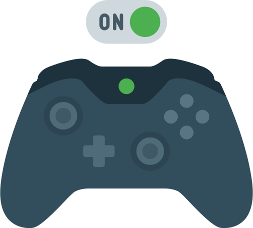
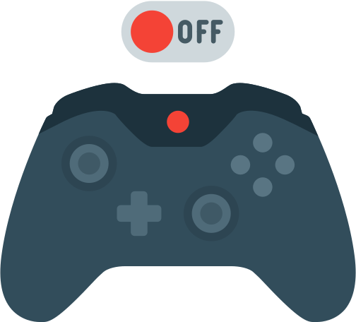

<ion-header class="juegos-header">
  <ion-toolbar class="header-toolbar">
    <ion-buttons slot="start">
      <ion-menu-button class="menu-btn"></ion-menu-button>
    </ion-buttons>
    <ion-title>Mis Juegos</ion-title>
  </ion-toolbar>
</ion-header>

<ion-content class="juegos-content">

  <!--Se define la cabecera de los Juegos Activos-->
  <!--ion-item class="CabeceraActivos">Juegos Activos
          <ion-icon name="logo-game-controller-a" item-start ></ion-icon>
  </ion-item-->

  <!--Se define el contenido de la tabla de Juegos Activos-->
  <!-- <ion-list *ngIf="JuegosActivos[0];else Aviso_no_juegos_activos"> -->
  <!--Si no tiene valor JuegosActivos,
              entonces aparecerá la alerta de Aviso_no_Juegos_Activos-->
  <!-- <ion-list class="container" *ngFor="let juego of JuegosActivos" (click) = JuegoSeleccionado(juego) >
                    <h2 style="text-align: center;">{{juego.Tipo}}</h2>
                    <p style="text-align: center;" id="p"> {{juego.Modo}} </p>
                  </ion-list>
        </ion-list>
        <ng-template #Aviso_no_juegos_activos >
          <label class = "AvisoNoJuegosActivo" >
            <b>No tienes juegos activos</b></label>
  </ng-template> -->

  <div>
    <ion-row style="height: 25px"></ion-row>
    

    <ion-slides [options]="sliderConfig">
      <ion-slide *ngFor="let juego of JuegosActivos">
        <div>
          <ion-card class="juegos-card-bg">
            <ion-card-header>
              <ion-card-title class="card-title"> {{ juego.Tipo }} </ion-card-title>
              <ion-card-subtitle class="card-stitle">{{ juego.Modo }}</ion-card-subtitle>
              <ion-card-content>        
                
                <ion-row style="height: 10px"></ion-row>
                <ion-button expand="full" (click)=JuegoSeleccionado(juego) shape="round">Ver más</ion-button>
              </ion-card-content>
            </ion-card-header>
          </ion-card>
        </div>
      </ion-slide>
    </ion-slides>
  </div>

  <div>
    

    <ion-slides [options]="sliderConfig">
      <ion-slide *ngFor="let juego of JuegosInactivos">
        <div>
          <ion-card>
            <ion-card-header>
              <ion-card-title> {{ juego.Tipo }} </ion-card-title>
              <ion-card-subtitle>{{ juego.Modo }}</ion-card-subtitle>
              <ion-card-content>
                
                <ion-button class="card-btn" (click)=JuegoSeleccionado(juego) expand="full" shape="round">Ver más</ion-button>
              </ion-card-content>
            </ion-card-header>
          </ion-card>
        </div>
      </ion-slide>
    </ion-slides>
  </div>

</ion-content>